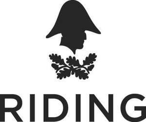
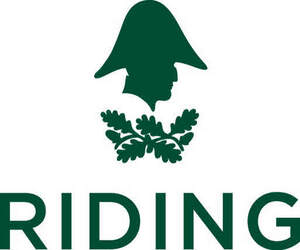

Trade Mark Journal No.2025/029 18 July 2025
UK00004213311 3 June 2025 (9,14,16,18,20,25,28,35,39,41,43,44)
Mark 1

Mark 2

- Class 9
- Riding hats; horse riding hats; riding helmets; horse riding helmets; magnets; decorative magnets; ornamental magnets; magnetic badges; fridge magnets; digital signage.
- Class 14
- Precious metals and their alloys; jewellery; tie clips; tie pins; brooches [jewellery]; ornaments of precious metal; badges of precious metal; boxes of precious metal; key rings.
- Class 16
- Printed matter; paper; cardboard; posters; prints; cards; postcards; greetings cards; calendars; stationery; pens; pencils; writing instruments and crayons; erasers; pen and pencil cases; pen and pencil holders; artists' materials; paint brushes; rulers; books; magazines; notepads; note books; exercise books; diaries; gift bags, gift boxes, gift tags and gift wrap; carrier bags; adhesive labels; labels of paper; cake labels; stickers; stamps.
- Class 18
- Bags; purses; wallets; luggage; toiletry bags; make-up bags; umbrellas; animal apparel; clothing for animals; saddlery, whips and apparel for animals; riding crops; headbands for horses; saddle cloths for horses; ear bonnets for horses; horse tack; equestrian tack; saddle blankets; horse blankets; horse saddlecloths; horse rugs; saddlery of leather; horse saddles; horse bridles; horse collars; horse halters; horse bits; reins; stirrups.
- Class 20
- Displays, stands and signage, non-metallic.
- Class 25
- Clothing; footwear; headgear; clothing for horse-riding [other than riding hats]; tops; t-shirts; jumpers; hoodies; jackets; horse riding jackets; coats; raincoats; gilets; trousers; leggings; jodhpurs; gloves; horse riding gloves; socks; shoes; boots; riding boots; hats; belts for clothing; liveries.
- Class 28
- Toys; games and playthings; toys, games and playthings for pets; gymnastic and sporting articles.
- Class 35
- Retail and online retail services in relation to riding hats, horse riding hats, riding helmets and horse-riding helmets; retail and online retail services in relation to magnets, decorative magnets, ornamental magnets, magnetic badges and fridge magnets; retail and online retail services in relation to precious metals and their alloys; retail and online retail services in relation to jewellery, tie clips, tie pins and brooches [jewellery]; retail and online retail services in relation to ornaments of precious metal, badges of precious metal, boxes of precious metal and key rings; retail and online retail services in relation to printed matter, paper, cardboard, posters, prints, cards, postcards, greetings cards, calendars, stationery, pens, pencils, writing instruments, crayons, erasers, pen and pencil cases, pen and pencil holders, artists' materials, paint brushes, rulers, books, magazines, notepads, note books, exercise books, diaries, gift bags, gift boxes, gift tags, gift wrap, carrier bags, adhesive labels, labels of paper, cake labels, stickers and stamps; retail and online retail services in relation to bags, purses, wallets, luggage, toiletry bags, make-up bags, umbrellas, animal apparel, clothing for animals, saddlery, whips and apparel for animals, riding crops, headbands for horses, horse tack, equestrian tack, saddle cloths for horses, ear bonnets for horses, saddle blankets, horse blankets, horse saddlecloths, horse rugs, saddlery of leather, horse saddles, horse bridles, horse collars, horse halters, horse bits, reins and stirrups; retail and online retail services in relation to clothing, footwear, headgear, clothing for horse-riding, tops, t-shirts, jumpers, hoodies, jackets, horse riding jackets, coats, raincoats, gilets, trousers, leggings, jodhpurs, gloves, horse riding gloves, socks, shoes, boots, riding boots, hats, belts for clothing and liveries; retail and online retail services in relation to toys, games and playthings; retail and online retail services in relation to toys, games and playthings for pets; retail and online retail services in relation to gymnastic and sporting articles; retail and online retail services in relation to drinking bottles, horse feed, edible horse treats, horse bedding, horse brushes and horse grooming preparations; administration of membership schemes; administration of a discount program for enabling participants to obtain discounts on goods and services through use of a discount membership card.
- Class 39
- Provision of parking facilities; providing information relating to vehicle parking services.
- Class 41
- Provision of sporting and recreational activities; provision of sporting and recreational events; provision of sports and recreational facilities; provision of sporting and recreational activities relating to horse riding and to equestrian activities; provision of sporting and recreational events relating to horse riding and to equestrian activities; provision of sports and recreational facilities relating to horse riding and to equestrian activities; provision of equestrian facilities; provision of horse-riding facilities; provision of education and training relating to horse riding; provision of education and training relating to equestrian skills; coaching in relation to horse riding; coaching in relation to equestrian skills; equestrian training; equestrian coaching; horse riding instruction; horse riding schools; horse training; horse showing; horse shows; organisation of horse shows; organisation of horse-riding meetings; organisation of horse-riding competitions; organisation of equestrian competitions; organisation of sports competitions; horse jumping events; horse dressage events; horse eventing events; recreational services relating to horse riding; recreational services relating to equestrian activities; rental of horses for recreation; holiday camp services; horseback riding camps; party planning services; provision of educational courses in the field of equestrian skills; provision of educational equestrian master classes; organisation of educational examinations in the field of equestrian skills; equipment rental for recreational horse riding; hire of horseriding facilities; hire of horse-riding arenas; hire of equestrian arenas; entertainment; organization of entertainment events; hospitality services (entertainment); live entertainment; fun fairs; musical entertainment; dog shows; information, advisory and consultancy services in relation to horse riding events and horse-riding facilities.
- Class 43
- Temporary accommodation; rental of temporary accommodation; rental of holiday accommodation; providing temporary lodging at holiday camps; provision of event facilities; rental of event facilities; provision of conference facilities; rental of conference rooms; hospitality services [food and drink]; provision of food and drink; café services; restaurant services; boarding for horses.
- Class 44
- Horse breeding services; breeding of thoroughbred horses; horse grooming services; shoeing horses and maintaining horses’ hooves; equine massage; care of pet animals; care of pet horses; hygienic care for animals; hygienic care for horses; information, advisory and consultancy services in relation to all the aforesaid services.
The Trustees of the Wellington Resettled Estate
Representative: Boult Wade Tennant LLP